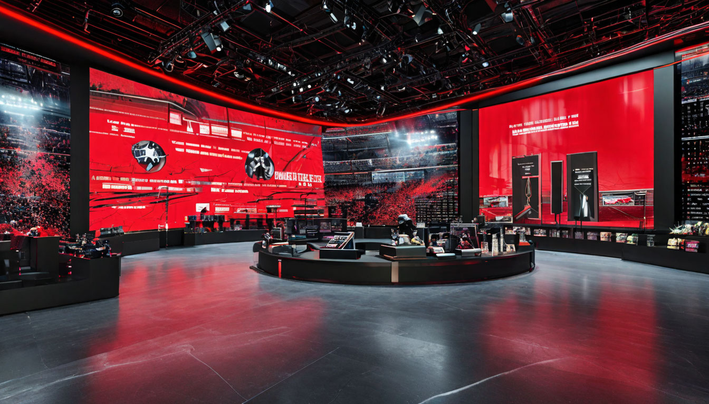

Новости в мире спортивной моды
Добро пожаловать в раздел, посвященный самым последним событиям и трендам в мире спортивной моды! Здесь вы найдете самые свежие новости о коллаборациях известных брендов, инновациях, устойчивом дизайне и вдохновляющих проектах, которые меняют представление о сочетании спорта и стиля.
Следите за обновлениями, чтобы быть в центре спортивной модной индустрии и не пропустить важные анонсы, тренды и советы по стилю!
Главные новости в мире моды и спорта
Запуск новой коллаборации: Nike и Louis Vuitton
Nike и Louis Vuitton анонсировали долгожданное сотрудничество, выпустив ограниченную серию кроссовок, которые объединяют спортивные и элитные модные элементы. Коллекция включает в себя 5 уникальных моделей с яркими цветами и высококачественными материалами. Предполагается, что обувь станет хитом среди любителей моды и спорта.

Nike и Louis Vuitton
Возвращение ретро: Взлет популярности винтажных спортивных коллекций
Спортивная мода начала возвращаться к корням с растущей популярностью винтажной экипировки 80-90-х годов. Бренды, такие как Champion и Reebok, возрождают классические дизайны, ставшие настоящими иконами стиля. Посты в социальных сетях от известных спортсменов и модных инфлюенсеров способствуют буму интереса к винтажным моделям.

Ретро-стиль и спорт
Технологии и мода: Wearable tech от Under Armour
Under Armour представила инновационную линейку спортивной одежды с встроенными технологиями отслеживания фитнес-данных. Одежда позволяет пользователям следить за показателями здоровья и физической активности прямо со своего смартфона. Данная коллекция обещает стать популярной среди любителей технологий и фитнеса.

Технологии и мода